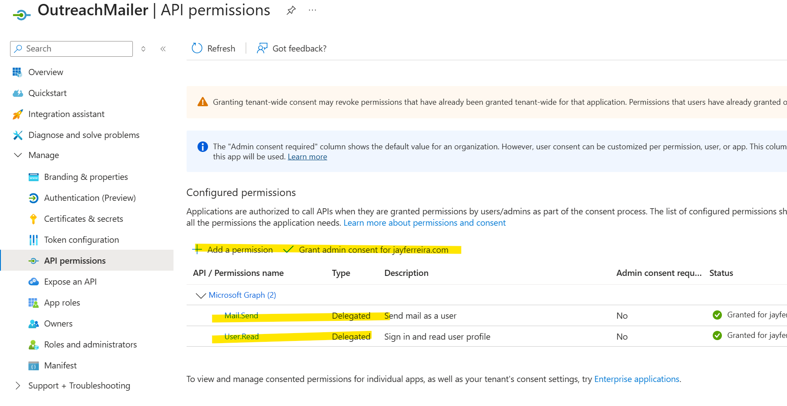

I run my email on my own domain using Microsoft 365. Like many technical people, I eventually hit a point where I wanted to send small, controlled batches of emails directly from my own mailbox without relying on third-party tools or marketing platforms.
This post documents how I built a repeatable, script-driven mass emailer using:
- A custom domain on Microsoft 365
- Microsoft Graph (instead of SMTP)
- A simple Excel file as the source of truth
- Python for orchestration and safety controls
The goal was not scale at all costs. The goal was control, transparency, and ownership.
Why not SMTP, Mailchimp, or "email tools"?
If you use Microsoft 365, you'll quickly discover that:
- SMTP AUTH is often disabled at the tenant level
- Even when enabled, it's fragile and increasingly discouraged
- Marketing platforms abstract too much and add unnecessary complexity
- I wanted emails to come from my real mailbox, not a sending service
Microsoft Graph is the supported, first-class way to send mail in modern Microsoft environments. So that's what I used.
High-level architecture
At a high level, the flow looks like this:
Excel → Python script → Microsoft Graph → Recipient inbox
Nothing more.

Step 1: Use your own domain on Microsoft 365
I'm using a custom domain (for example, @mydomain.com) attached to Microsoft 365. This matters because:
- Emails come from a real mailbox
- SPF, DKIM, and DMARC are already handled properly
- Replies land directly in my inbox
No relay servers. No spoofing. No surprises.
Step 2: Register a Microsoft Entra (Azure AD) application
To send email programmatically, I registered an app in Microsoft Entra ID with delegated permissions, not application-wide permissions.
What is an Entra ID app?
A Microsoft Entra ID app registration is essentially an identity for your application within your Microsoft tenant. Think of it as a security principal that allows your script to authenticate and request specific permissions to access Microsoft services like Graph API.
When you register an app, you're creating a trust relationship between your code and Microsoft's identity platform. This is how Microsoft knows:
- Who is requesting access (your application)
- What permissions they need (Mail.Send, User.Read, etc.)
- How they authenticate (device code, client secret, certificate)
- What scope of access they have (delegated vs. application permissions)
The key permissions I used were:
- Mail.Send - allows sending email as the authenticated user
- User.Read - allows reading basic user profile information
This allows the script to send email as me, after I authenticate once.
For a deeper dive into app registrations and the Microsoft identity platform, see Microsoft's official documentation.
Important detail: I explicitly enabled public client flows so I could use device-code authentication without client secrets.
Step 3: Use Microsoft Graph with device-code authentication
Instead of storing passwords or secrets, I used Microsoft's device code flow:
- First run prompts me to sign in via browser
- Tokens are cached securely on disk
- Subsequent runs reuse the token silently
This gives me:
- No hard-coded secrets
- No password rotation issues
- Minimal blast radius if something goes wrong
Example: First Run Authentication
When you run the script for the first time, you'll see output like this in your Windows command prompt:
After the first authentication, subsequent runs are silent and automatic since the token is cached locally.
Step 4: Drive everything from Excel
I wanted a source of truth that was:
- Human-readable
- Easy to audit
- Easy to pause, resume, or correct
So I used Excel with columns like:
Name | Email | Variant | StatusThe script:
- Reads rows
- Skips anything already marked as sent
- Updates Status after each email
That makes the process resumable and safe by default.

Step 5: Add safety rails in code
This is where scripting beats tools.
I built in explicit controls:
- DRY_RUN mode (prints what would send)
- MAX_SEND cap per run
- Delay between sends
- Automatic skipping of invalid or already-processed rows
Here's a sanitized example of the core loop:
for row in rows:
if status_is_not_empty(row):
continue
if sent_count >= MAX_SEND:
break
send_email_via_graph(
to=row["Email"],
body=render_template(row)
)
mark_row_as_sent(row)
sleep(DELAY_SECONDS)That's it. No magic.
Example: Running in DRY_RUN Mode
Before sending any real emails, I always do a dry run to verify everything looks correct:
This safety check has saved me from embarrassing mistakes more than once.
Step 6: Avoid common pitfalls (winmail.dat, auth loops, Excel bugs)
A few things I learned the hard way:
- Force HTML body format to avoid winmail.dat attachments
- Normalize Excel blanks so empty cells don't become "nan"
- Use absolute paths to avoid reading the wrong file
- Persist MSAL token cache to disk to avoid logging in every run
None of these are hard problems, but they matter.
What this approach gives you
This setup gives you:
- Full ownership of your sending
- Emails that come from your real mailbox
- No third-party dependency
- Clear, auditable state
- Small, intentional batch sending
Most importantly, it proves a broader point:
If you own your domain and understand your platform, you can build exactly what you need.